记一次反编译PyInstaller打包的可执行文件获得其Python源码的过程
笔者因为一些原因，需要反编译别人打包好的 Python3 写的 exe 程序获得其源码，但是本人对于 Python 的反编译是一窍不通的，于是在十分钟的谷歌学习后，这篇文章诞生了
第一步
首先，我们安装完 python 并且配置好环境变量后，去下载 pyinstxtractor.py 这个工具，他能把 PyInstaller 打包的 exe 文件里包含的依赖库和已编译好的.pyd 或者.pyc 字节码文件给“解压”出来，这其中，.pyd 文件的反编译特别复杂（因为.pyd 其实是已经编译成.c 后封装成类似.dll 的东西了，根本看不出 Python 的源码了），技术力不足的我这部分无能为力，本次讲的是.pyc 的反编译。
1 | python pyinstxtractor.py Test.exe |
运行工具“解压”完成后，
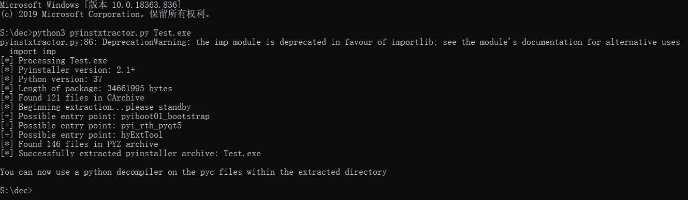
我们看到目录中生成了一个文件夹：
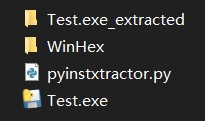
图中的 Test.exe_extracted 文件夹便是 Test.exe 文件被“解压”后的结果，然后我们找到类型为.pyc 的字节码文件（或者如下图所示的类型为文件的文件）
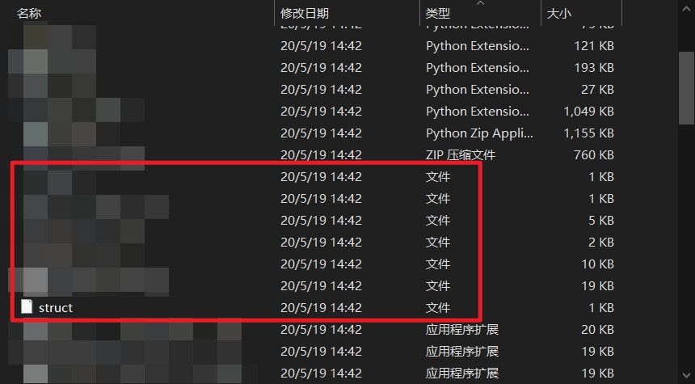
然后把他们改为后缀名为.pyc 的字节码文件（因为上述工具解压过程无法识别这些二进制的文件所以没有自动改后缀）
【这里剧透下：其实是因为这些字节码文件标头的幻数被人删除了】
第二步
接着，我们开始对上述“解压”出来的已编译的.pyc 字节码文件进行反编译
首先，pip 安装 uncompyle6：https://pypi.org/project/uncompyle6/
1 | pip install uncompyle6 |
然后试着直接使用一次：
1 | uncompyle6 Test.pyc |
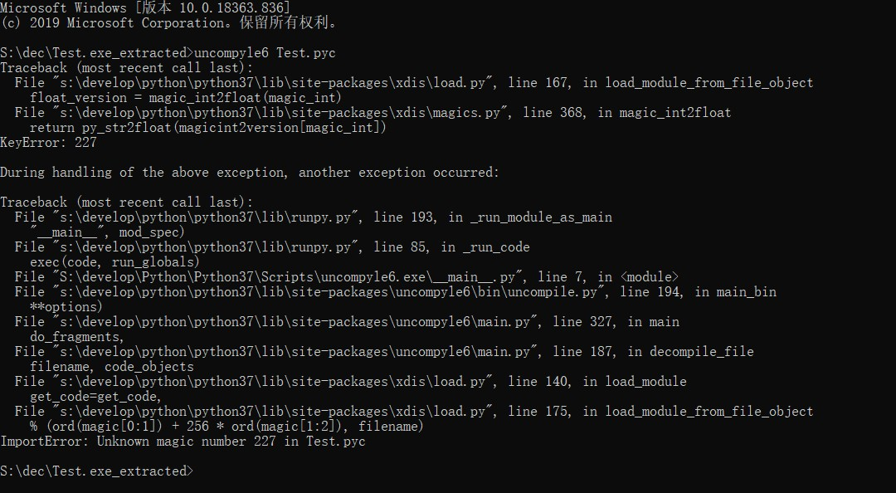
然后我们发现，提示的是“导入错误：Test.pyc 中有无法识别的幻数 227”
这个 227 其实是十六进制的数字，我们用 WinHex 打开 Test.pyc 查看一下：
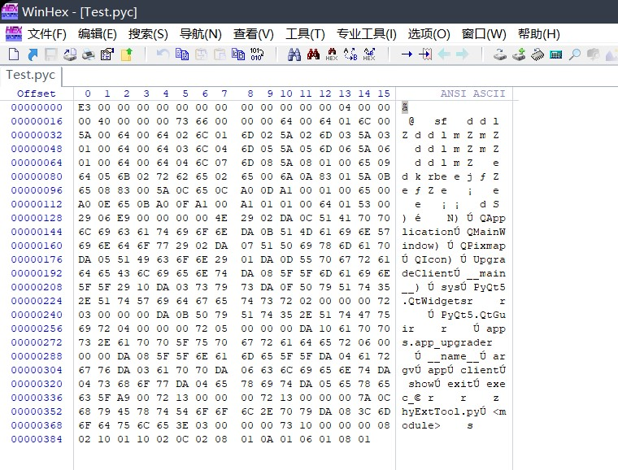
我们发现，并没有什么特征，我们继续把同目录的 struct 文件打开看一下：
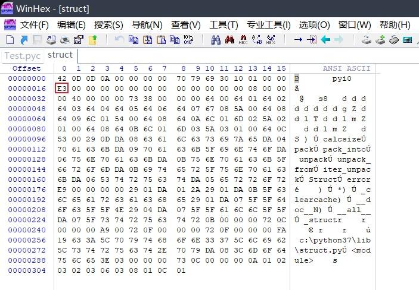
我们发现，这里也有一个“E3”，而十六进制的 E3 恰好就是 227，诶，我们发现，幻数 227 是错误的，说明，在这个 E3 前面，本来应该有一个正确的幻数，在编译成.pyc 字节码文件的过程中，可能被人篡改或者删除了，而我这个情况是被人删除了，那我们手动插入这个数字进去试试：
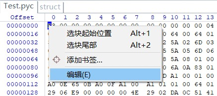
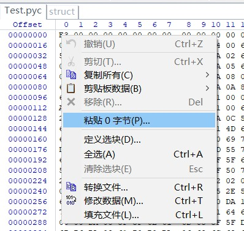
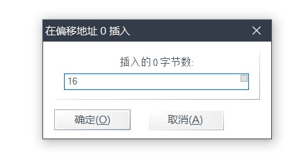
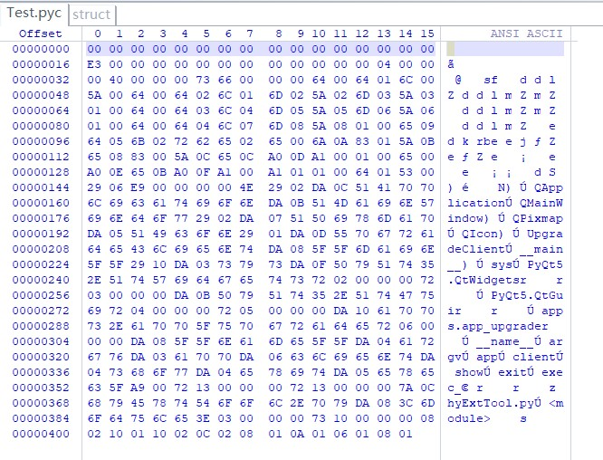
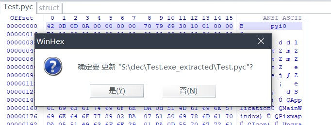
然后我们再试一次反编译：
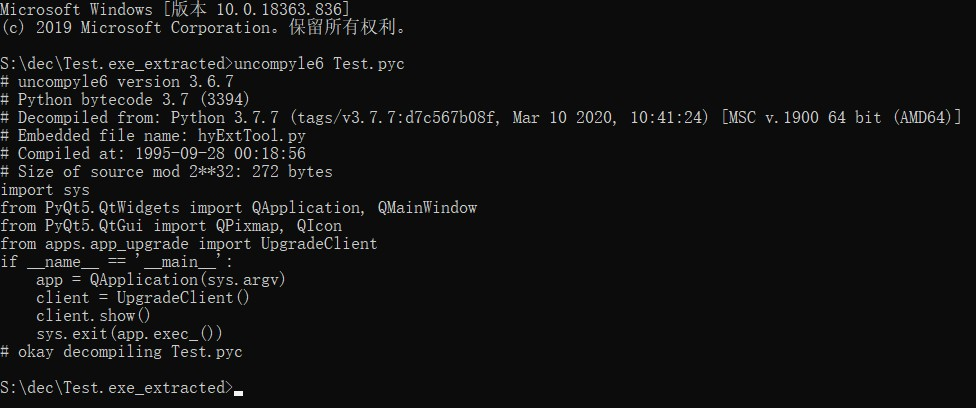
提示成功，源码也显示了出来，查看不方便的话可以这样写：
1 | uncompyle6 Test.pyc > Test.py |
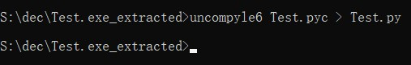
这样根目录就会出现反编译完成的.py 源码文件了
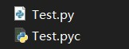
后记
新版本的 pyinstxtractor.py 已经增加了自动补全 python 版本幻数的功能了：
https://github.com/extremecoders-re/pyinstxtractor
批量反编译
笔者又在 github 上找到了一个批量反编译.pyc 字节码文件的脚本：
https://github.com/jazlopez/py-recursive-uncompyle6
这个脚本会自动搜索自身所在的目录及其子目录下的所有.pyc 字节码文件，然后通过安装好的 uncompyle6 进行反编译，不足之处是，反编译后只会把反编译完的.py 源码文件扔在原文件旁，而不是另建文件夹储存。
不过，我们可以修改这个脚本中的 uncompyle_to 参数来指定输出文件夹
1 | uncompyle_to = os.path.join(parent, i["dirname"], i["name"]) |
因为笔者没有这个需求，所以这个代码逻辑的修改就留给读者你了，改完记得去给原项目 PR 哦